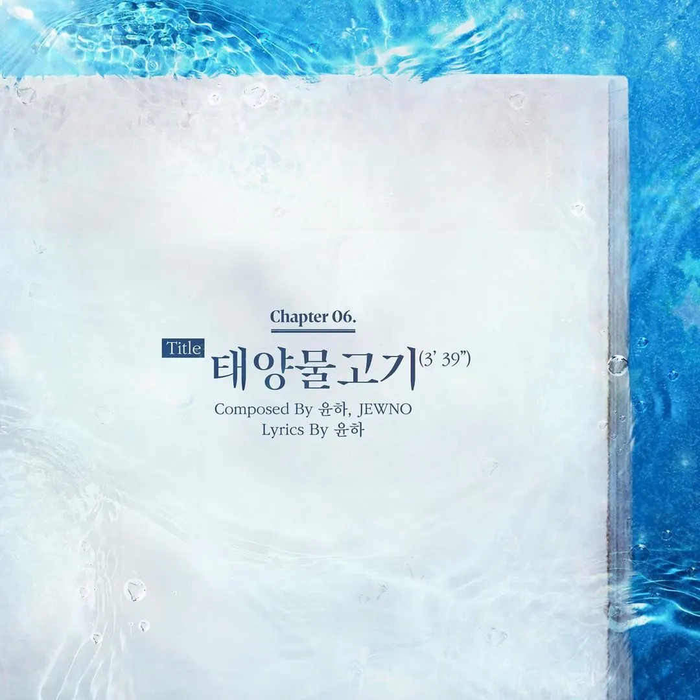
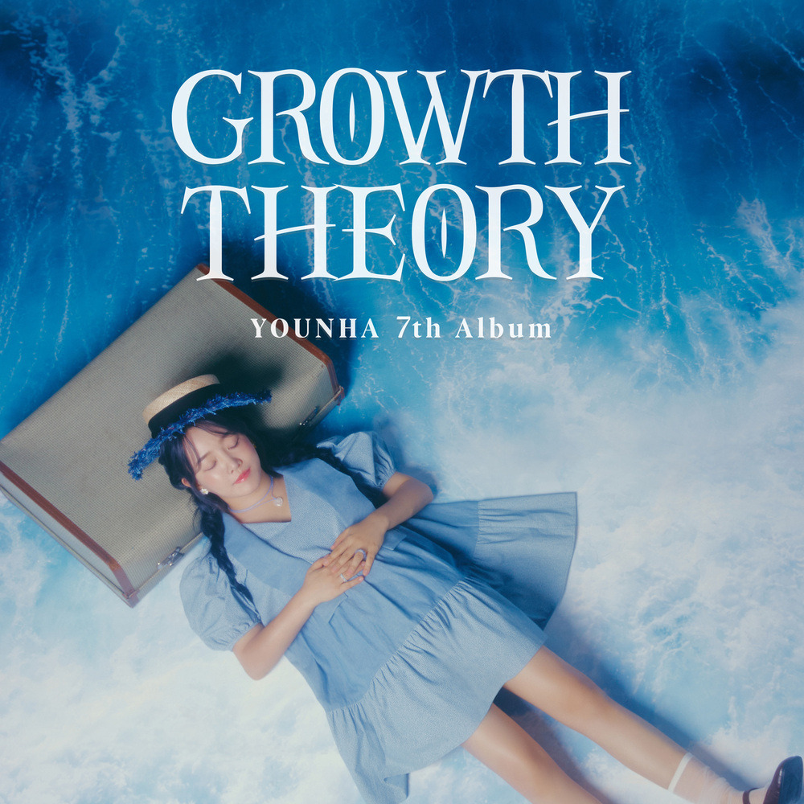

안녕하세요라보엠입니다.
올해로 데뷔 20주년이 된 윤하의 정규 7집 GROWTH THEORY 가 발매되었습니다. 타이틀곡은 태양물고기로 뮤직비디오에는 소녀와 개복치가 등장하고, 작은 요트를 타고 함께 여행을 떠나는 이야기가 담겨있으며, 앨범 타이틀처럼 성장에 대한 이론서입니다. 지난 앨범에서 역주행하며 큰 인기를 얻었던 사건의 지평선과 같은 락넘버로 윤하만의 색을 유지하며 성장에 관한 메시지를 담고 있습니다.

윤하 태양물고기 MV
윤하 태양물고기 가사
매일이 좋을 순 없어도
가끔은 기대해
실망에 빠져 버리지 난
아직도 자라는 중일까
멈춘 것보다야
훨씬 기뻐할 일이지만
아무리 마음을 먹어봐도 왠지
어디서 잘못된 건지
막막하기만 해
어쩌면 보여진 내 모습이
전부는 아닐까 두려워
수면에 오를 때
별일 아닐 거라 했지?
반짝여 세상을 비춰
어기지 않은 약속
태양이 건네줬던 힘
어떤 누구의 얘기도
기꺼이 미소 짓도록
단단한 내가 되기를
하늘 담은 바다처럼
어쩜 이다지도 다를까
생각지도 못한
생각에 부딪혀 고민해
날카로운 마음의 의미
누군가 방치한
아이의 몸부림이라도
모든 걸 해결할 수는 없어
다만 오해와 미움의 고향
그곳은 어딜까
가만히 두드린 어깨 위로
차분히 피어난
안도의 숨이 느껴질 땐
별일 아닐 거라 했지?
반짝여 세상을 비춰
어기지 않은 약속
태양이 건네줬던 힘
어떤 비뚤어진 맘은
별빛을 받아온 너의
온기가 필요하니까
하늘 담은 바다처럼
당연하게 존재하는 건
어쩌면 기적일지도 모르지
바다의 태양 되어 빛을 낼 거야
별일 아닐 거라 했지?
반짝여 세상을 비춰
어기지 않은 약속
태양이 건네줬던 힘
어떤 비뚤어진 맘은
별빛을 받아온 너의
온기가 필요하니까
네가 필요해
별일 아닐 거라 했지?
반짝여 세상을 비춰
어기지 않은 약속
태양이 건네줬던 힘
어떤 누구의 얘기도
기꺼이 미소 짓도록
단단한 내가 되기를
하늘 담은 바다처럼
윤하 태양물고기 credit
6. 태양물고기
타인의 평가나 타인의 잣대가 아닌 스스로 치열히 옳다고 여기는 길을 가면 그것으로 충분하다는 내용을 담은 곡으로 공고히 정립된 윤하 스타일의 락넘버이다.
Composed By 윤하, JEWNO
Lyrics By 윤하
Arranged By JEWNO, SHAUN, 이신우
윤하 7집 앨범 커버

윤하 관련 노래
[지금이노래] 윤하 - 사건의 지평선 가사
안녕하세요 한스입니다. 1년전 윤하의 특이한 제목의 노래가 나왔습니다. 바로 사건의 지평선 입니다. 윤하 - 사건의 지평선 윤하(YOUNHA) - 사건의 지평선 M/V - Youtube 사건의 지평선의 의미는? 사건
umm.la-bohe.me